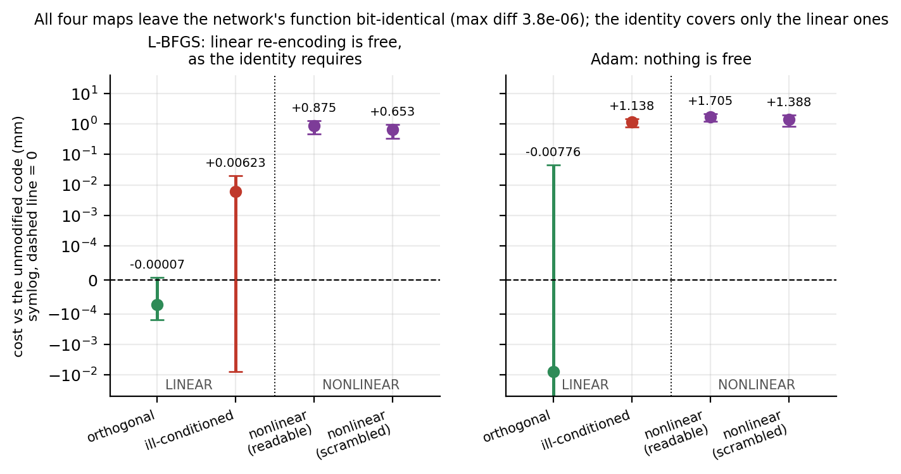
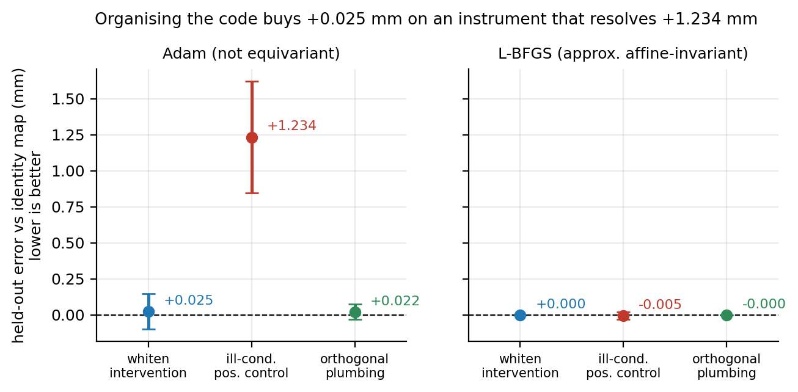
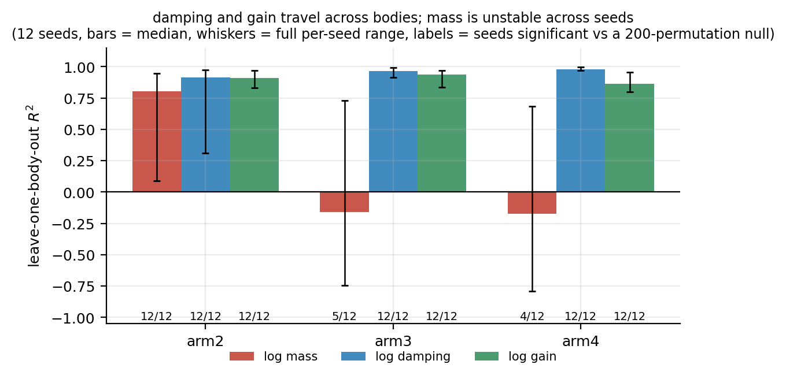
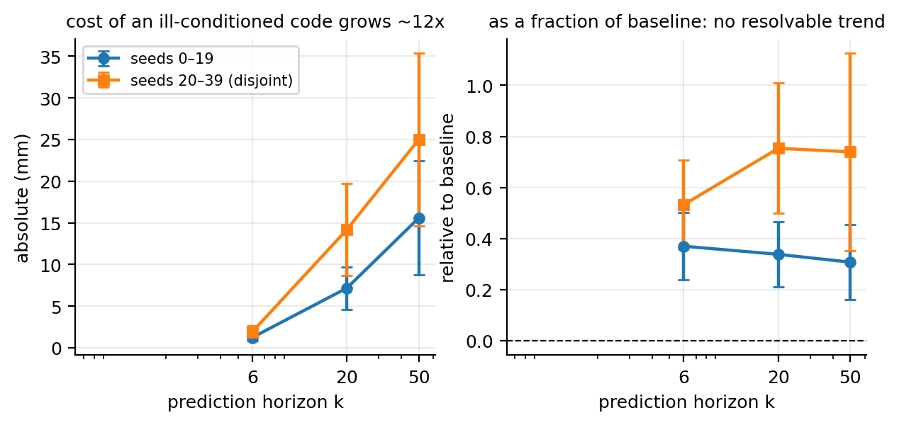
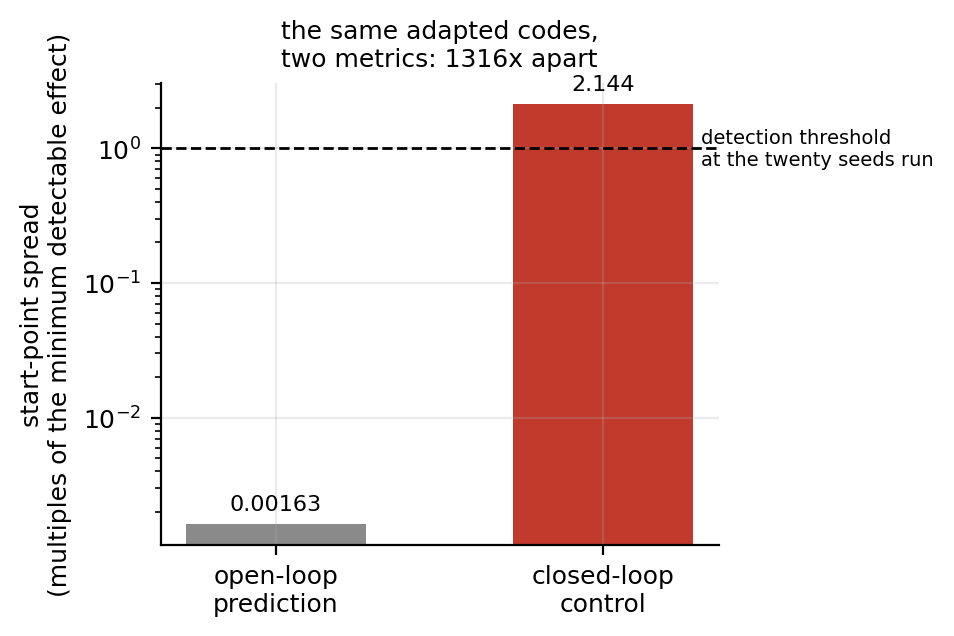

Draft · 2026 · sole author
For a large family of “reorganise the code” proposals, an algebraic identity settles the question before any experiment runs. The interesting part is the two places it stops.
Mu-Hua (Maurice) Wang · National Yang Ming Chiao Tung University
Code, all twenty-four pre-registrations and the stored result files behind every number are public. Not posted to any preprint server. Targeting IEEE Transactions on Cognitive and Developmental Systems.
The same result, assembled from the stored run (32 s, sound not needed). The premise, then what the identity claims, then the twenty seeds of the decisive experiment added one at a time, each arm's running mean and 95 % interval updating as they arrive. The vertical axis is fixed from the first frame and nothing is smoothed, so the separation you see is the separation the numbers have.
Developmental robotics proposes mastering a competence then reorganising it for a new body. For a large family of interventions an identity settles it in advance. With the dynamics core frozen and only a low-dimensional body code θ adapted, replacing θ by Mθ for any invertible M and the code's weight block by WθM−1 leaves the function unchanged, so adaptation begun at Mθ0 under an equivariant rule cannot change held-out error. We measure both conditions.
Linearity: function-preserving nonlinear re-encodings cost +0.653 and +0.875 mm (n = 20, p ≤ 4 × 10−4), while linear ones are bounded above by 0.020 mm, not resolved from zero. One is the identity at every training code, so it preserves leave-one-body-out decodability by construction, stays nonlinear where adaptation runs, and still costs +0.875 mm: probe and error come apart. Optimiser equivariance: under Adam even a rotation displaces error cell by cell.
An ill-conditioned code's absolute cost grows with evaluation horizon on two disjoint seed blocks (+6.67 and +10.86 mm per log unit, p ≤ 2 × 10−4); the relative cost is unresolved. Whitening the code costs +0.025 mm (p = 0.68) against a positive control resolving +1.234 mm. The code decodes named morphology scalars, though mass decodes only unstably. A fixed master-then-differentiate schedule is worse than joint training at 20 seeds on two of three bodies, under a post-hoc manipulation check. Our nulls are scoped to open-loop prediction on arm2. Whether it pays under a control objective is open; two attempts failed their pre-registered checks.
Core frozen, only θ adapted. Send θ to Mθ and the code's weight block to WθM−1: the network computes the same function, so held-out error cannot change. Orthogonalising, rescaling and whitening are all out before the first experiment runs.
Nonlinear re-encodings are not protected, and cost +0.875 mm. And for the identity to travel from the function to the estimate, the update rule has to be equivariant to the map — Adam is not.
A fixed master-then-differentiate schedule is worse than joint training.
Neither ingredient of the identity is mine: the GL(n) symmetry of a layer's input block and the optimiser-equivariance taxonomy are both established, and both are cited. The corollary for a conditioning code, and its magnitude, are.

All four maps leave the network's function unchanged (largest disagreement 3.8 × 10−6 over 20 seeds). Under L‑BFGS the two linear maps are inert, as the identity requires; the two nonlinear ones cost about a millimetre. Linearity is what the identity actually buys. Under Adam even the linear maps stop being free.

A null with a working positive control. Whitening the code — the most natural way to “organise” it — is worth +0.025 mm (p = 0.68) on the same instrument that resolves +1.234 mm of damage from ill-conditioning. Without that control a null cannot be told apart from a measurement too coarse to see anything.

Which factor breaks. Damping and gain decode from θ on every body we measured; mass is unstable across seeds, reaching 0.805 on arm2 (12/12 seeds significant) against medians of −0.16 on arm3 and −0.17 on arm4. What fails is reliability, not decodability.

The cost of a badly conditioned code grows with the horizon. About thirteenfold from k = 6 to k = 50, on two disjoint seed blocks (+6.67 and +10.86 mm per log unit, p ≤ 2 × 10−4). Whether the relative cost grows is unresolved.

The same adapted codes, scored two ways. Start-point spread is 0.001630 of a minimum detectable effect under open-loop prediction and 2.1441 under closed-loop control, a 1316-fold amplification, both at the twenty seeds the round ran under L‑BFGS. It is a statement about which metric can resolve a start-point difference, not an effect size.
| Result | Estimate (95 % CI) | Holds on |
|---|---|---|
| Linear re-encoding of the code is inert under a curvature-aware rule An identity, not a measurement: the function is bit-identical, so held-out error cannot change. The measured bound is the interval endpoint, 0.020 mm, not the point estimate. | −0.00007 mm +0.006 mm |
identity |
| Function-preserving nonlinear re-encoding is not inert n = 20 seeds, three adaptation budgets, L‑BFGS. | +0.875 [+0.474, +1.275] +0.653 [+0.333, +0.973] |
arm2 |
| A code kept exactly as decodable is not kept as useful I constructed a map that equals the identity at every training code and stays nonlinear elsewhere. A standard leave-one-body-out probe, evaluated only at those training codes, cannot see it by construction — difference 0.000 on all 20 seeds — and it still costs the full penalty. So a decodability metric evaluated only at training codes is blind to the region adaptation actually runs in. | +0.875 mm at ΔR² = 0.000 |
arm2 |
| Organising the code by whitening buys nothing, against a positive control The control resolves +1.234 mm (p = 2.2 × 10−6) on the same seeds and budgets. Its map has condition number 300 against the whitening map's 5.2 at the median seed (15.6 at worst), so the bound rests on the measured interval and not on a ratio between two magnitudes that differ by roughly sixtyfold. | +0.025 [−0.0986, +0.1479] p = 0.68 |
arm2 |
| A fixed master-then-differentiate schedule is worse than joint training Step-controlled: the joint arm is cut to 1121 optimiser steps against staged's 1150. Weighted by learning rate the staged arm still receives only 40–69 % of the joint arm's budget. The direction holds at every weighted budget tested (40 %, 50 %, 69 %, on two bodies), but we cannot say it is independent of the remaining budget gap. | −1.150 [−1.713, −0.586] −1.238 [−1.706, −0.771] |
two bodies |
| The unsupervised code decodes named morphology, factor-specifically Damping and gain travel across every body tested; mass does not. 12 seeds, 20 bodies each, 200-permutation null per cell. | damping/gain 12/12 mass 12/12, 5/12, 4/12 |
three bodies |
| Whether reorganisation pays under a control objective Attempted twice; both attempts failed their own pre-registered checks. The instrument — budget-10 code adaptation scored by random-shooting MPC — cannot answer the question, which is not the same as answering it negatively. | — | open |
The net effect of conditioning, pooled over seeds and cells, is bounded at 0.099 mm, taken from the interval end most favourable to whitening. A benefit concentrated on the worst-conditioned seeds is neither established nor excluded. This route is bounded, not closed.
| Body | Links / DoF | Seeds | Result |
|---|---|---|---|
| arm2 | 2 | 20 | Carries every headline result |
| arm3 | 3 | 20 | Staging result replicates; the conditioning effect is not resolvable at the horizon the pre-registered entry criterion tested, so the body is excluded from that section |
| arm4 | 4 | 20 | Excluded by its own manipulation check — even though its unused numbers pointed our way |
| myoArm | 20 joints, 34 muscles | 4 | Decodability extends; the staging replication has a minimum detectable effect of about 21 mm against a 0.90 mm target — uninformative by a factor of 23. Reaching that target in absolute millimetres would need of order two thousand seeds; if the effect instead scales with this body's larger error, tens would do. We cannot tell which |
Every result is scored by six-step open-loop prediction error. A pre-registered test shows that choice is not neutral: the same adapted codes show start-point differences worth 0.001630 of a minimum detectable effect under prediction and 2.1441 under closed-loop control, a 1316-fold difference in what the two metrics resolve, measured at twenty seeds under L‑BFGS. The negative results are therefore scoped to the prediction metric, and the paper says so rather than generalising.
Three bodies, one set of movements (6 s). Bodies are dimension-preserving parametric perturbations — mass and inertia, joint damping, muscle force gain — so state and action spaces never change and transfer is well-posed. This illustrates the premise; it claims no result.
The most valuable thing in this project is not the result. It is what was done when the result did not cooperate.
Including when the failing cell's unused numbers would have supported us. Two sections contain such a cell — arm4 is excluded on exactly these grounds.
Three of five planned mechanisms ran at two seeds with no stored result file, and the surviving lab note disagrees with the closest stored JSON. Those numbers are withdrawn entirely.
Four of ten settings in one round have design documents that postdate their results. The measurements stand; the pre-registration guarantee does not extend to them, and the paper says which.
In the MPC round, adapted codes were taken as the minimum of 8 restarts while unadapted codes were evaluated once. Those are not comparable statistics, so that check was withdrawn rather than counted.
Every figure regenerates from stored JSON; no number in the paper is hard-coded into a plot. The whole pipeline runs in minutes on one consumer laptop.